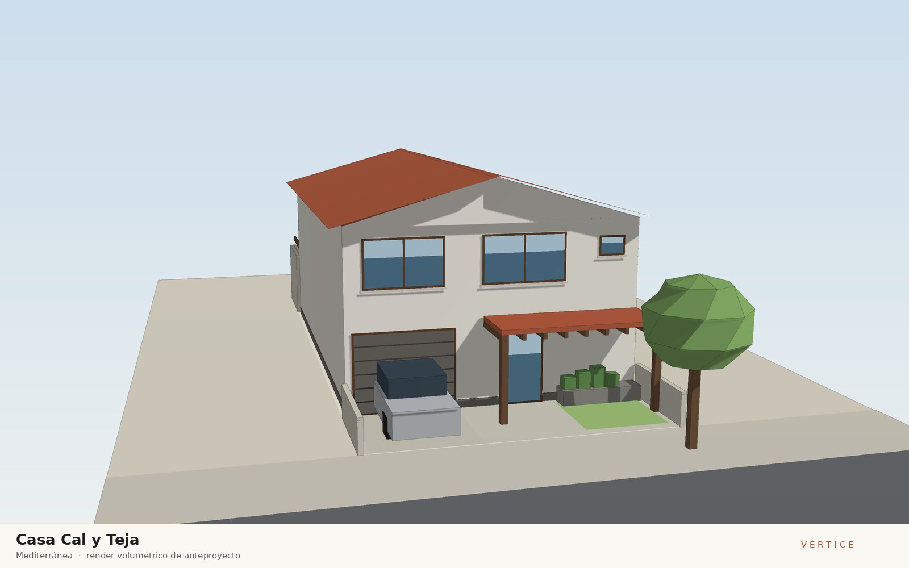
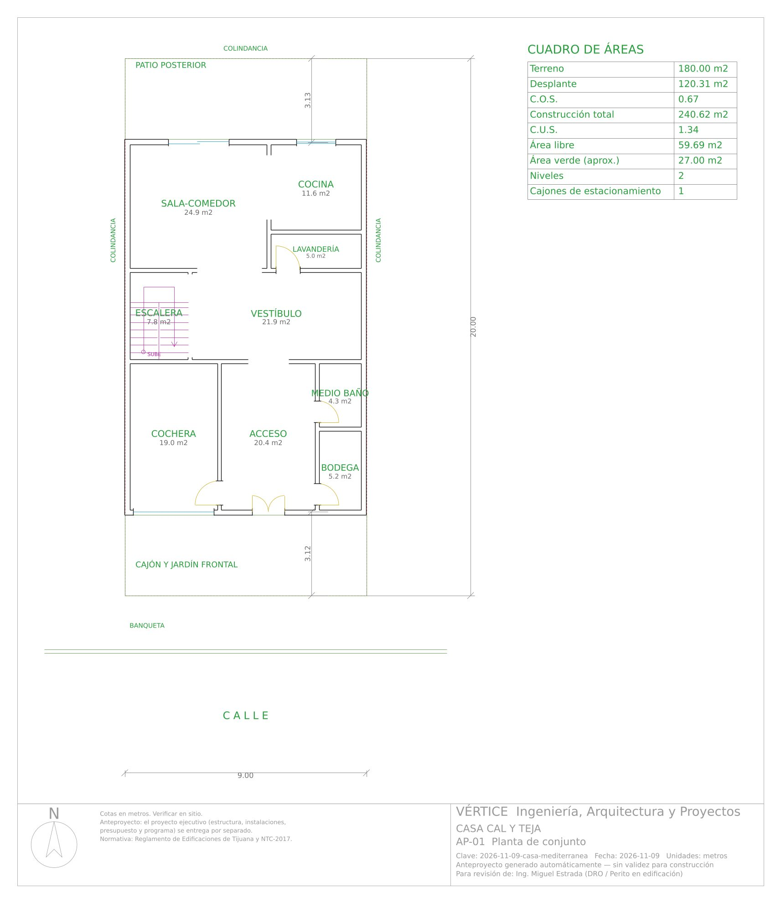
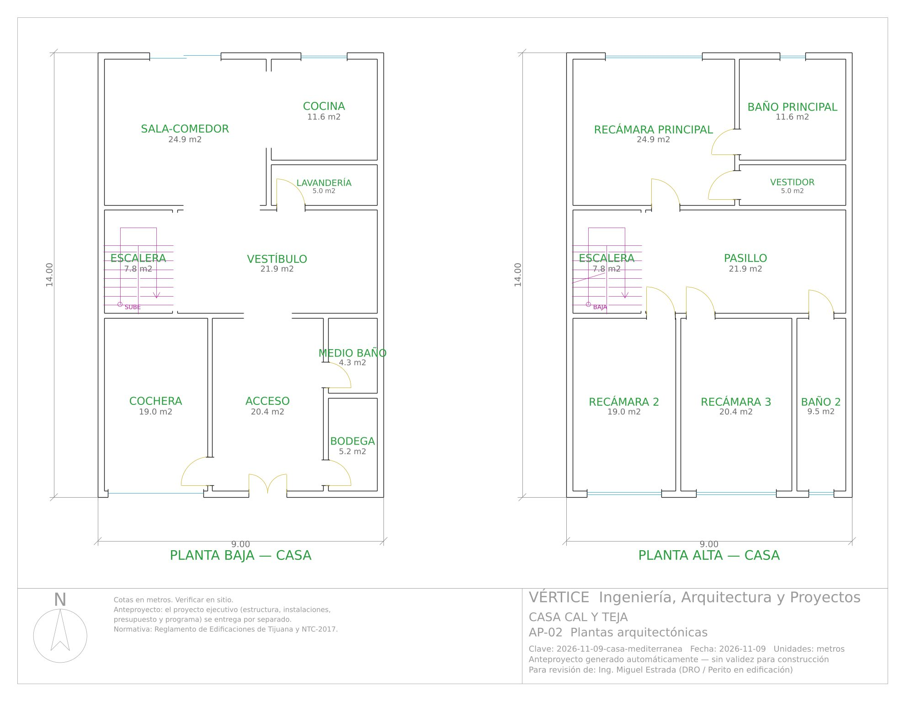
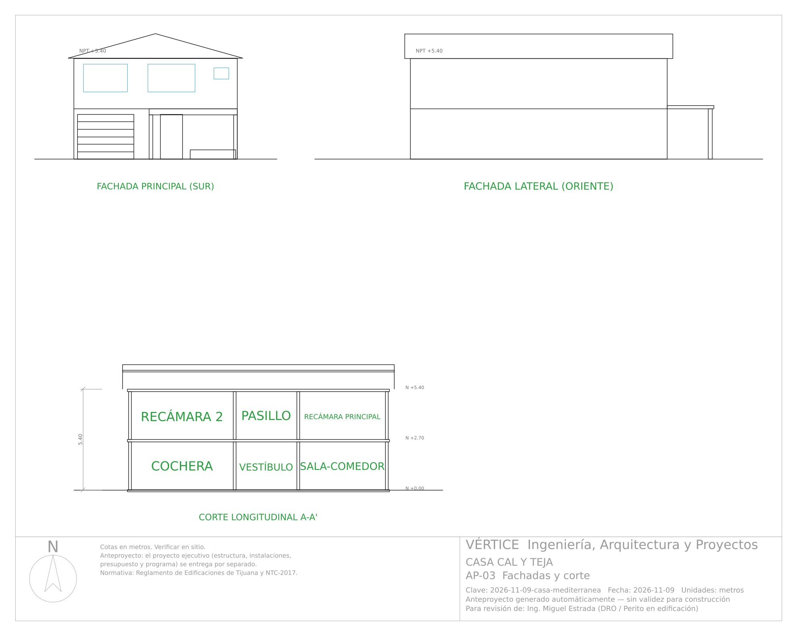

9 de noviembre de 2026 · Casa habitación
Casa Cal y Teja
Corriente: Mediterránea

Concepto
Vivienda de dos niveles en un lote angosto de 9 x 20 m que traduce la casa mediterránea al clima de Tijuana, que es mediterráneo semiárido: muros gruesos encalados en blanco que reflejan el sol del poniente, ventanas medidas y profundas, y una cubierta de teja de barro a dos aguas que escurre las lluvias concentradas del invierno. Un porche de madera protege el acceso desde la calle y, al fondo, una pérgola de madera de 2.50 m de vuelo convierte el patio posterior en una estancia exterior sombreada que prolonga la sala-comedor a través de un cancel corredizo; las ventanas en las fachadas norte y sur dejan cruzar la brisa marina de lado a lado de la casa. Jardineras de piedra al pie de la fachada principal anclan la casa al suelo con vegetación de bajo consumo de agua (lavanda, romero, olivo). El azul de la herrería y de la puerta de acceso es el único acento sobre el blanco de la cal.
Dictamen del arquitecto
- Terreno de 9.00 x 20.00 m (180 m²); casa de 8.75 x 13.75 m a ejes en 2 niveles, 240.6 m² construidos con desplante de 120.3 m²: COS 0.67 y CUS 1.34 (por verificar con el PDU de Tijuana). Jardín frontal de 3.12 m con jardineras de piedra y cochera cubierta de 3.40 x 5.60 m (1 cajón); patio posterior de 3.13 m con pérgola de madera de 2.50 m de vuelo.
- Lenguaje mediterráneo adaptado a Tijuana: muros encalados blanco hueso, cubierta a dos aguas de teja de barro (30 %) con hastiales a la calle y al patio, porche de madera sobre el acceso, ventanas medidas (40 % de vano) y el azul de la puerta de acceso y la herrería como único acento; piso de barro terracota 30x30 en interiores. Render, AP-03, A-05 y Blender dibujan ahora la misma pérgola.
- Recorrido: puerta doble de 1.20 m bajo el porche → acceso (3.65 x 5.60 m) con paso a cochera, medio baño (con ventila y extractor) y bodega → vestíbulo con escalera en U → sala-comedor (4.75 x 5.25 m) abierta a la cocina (3.33 x 3.50 m), que tiene salida a la lavandería por el vestíbulo; la sala sale al patio por un cancel corredizo P-4 de 2.25 x 2.10 m. Escalera de 1.15 m de tramo, peralte 16.9 cm y huella 30.2 cm (2p+h = 64 cm).
- Planta alta: pasillo-estancia que reparte a recámaras 2 (3.40 x 5.60 m) y 3 (3.65 x 5.60 m) con clóset, y al baño 2; recámara principal (4.75 x 5.25 m) con vestidor y baño propios. Todas las recámaras ≥ 2.70 m de lado y con ventana al exterior con antepecho de 0.90 m; altura libre 2.57 m en ambos niveles (≥ 2.30 m). Ventilación cruzada norte–sur en ambas plantas.
- Correcciones de motor en revisión: la pérgola sólo existía en los renders (y Blender usaba otro vuelo); ahora layout.pergola da una sola geometría que dibujan render, Blender, AP-03 y A-05 (fachada norte y laterales, con las marcas de nivel recorridas para no encimarse). La puerta de acceso de la cédula de cancelería siempre decía 'parota' y el zoclo siempre 'porcelanato': ahora ambos se toman de los materiales del spec.
Dictamen de ingeniería
- Veredicto: construible conforme a norma — 0 errores y 0 avisos en 29 verificaciones de coordinación —, sujeto a los supuestos por validar indicados abajo. La pérgola y el porche son estructuras ligeras de madera independientes de los muros de carga.
- Mampostería confinada con block de 15 cm en ambas direcciones, castillos K-1 15x20 (42 en PB y 43 en PA) y dalas de desplante y cerramiento; 9 cerramientos de 15x30 a 20x30 cm (claro máximo 3.25 m). Todos los muros de planta alta apoyan sobre muros o trabes. Método simplificado NTC: X VR 59.1 t ≥ Vu 55.5 t (margen 6.5 %, el más justo: no abrir más vanos en muros X sin revisar); Y VR 89.4 t ≥ 55.5 t; V basal 50.4 t con c = 0.213 supuesto y T = 0.17 s.
- Losas macizas de 13 cm en entrepiso (≥ 13.0 cm) y azotea (≥ 12.4 cm), f'c 250 kg/cm², #3 @ 20 a.s. y #3 @ 10 en el tablero de la sala-comedor (4.75 x 5.25 m, Mu 2.18 t·m/m); cubierta de teja de barro sobre armadura de PTR apoyada en la losa de azotea.
- Zapatas corridas de 50 x 20 cm: ZC-1 perimetral (q = 5.36 t/m², excéntricas en los linderos oriente y poniente) y ZC-2 interior (q = 8.89 t/m²) contra una q adm supuesta de 12 t/m² a -0.80 m: requiere estudio de mecánica de suelos y confirmar el espectro sísmico del sitio. Cuantificación: 4,813 kg de acero (20.0 kg/m²) y 57.3 m³ de concreto.
- Instalaciones: toma Ø13 mm, 22 UM (1.21 L/s), alimentación Ø25 mm, cisterna de 2 m³ con hidroneumático y calentador de paso; 25 UD, bajadas de baño 2 (a la bodega) y baño principal (a la cocina) junto a muro, colector Ø100 mm al 2 % a la red CESPT; gasto pluvial 3.3 L/s a 2 bajadas Ø100 mm con canalón perimetral; 13 circuitos (12.4 kW instalados, 8.7 kW de demanda, 43.8 A), interruptor general 2P-60 A, desbalance 0.7 %; gas LP con tanque estacionario de 300 L en el patio, ventilado y a más de 3 m de flamas. Factibilidades de CESPT y CFE por tramitar.
- Presupuesto de $1,401,024 + IVA ($1,513,105 con IVA fronterizo; $5,822/m²) y programa de 17 semanas (99 días hábiles); la cancelería, la teja, el porche y la pérgola quedan en la hoja "Por cotizar" (37 partidas) hasta tener cotización de proveedores de Tijuana.
Materiales
Muros de block de concreto con aplanado rústico de mortero cal-arena y pintura a la cal color blanco hueso; losa maciza de azotea impermeabilizada bajo cubierta a dos aguas (30 %) de teja de barro recocido sobre armadura de PTR; puerta de acceso doble de madera sólida con esmalte azul mediterráneo; herrería de forja en ventanas con el mismo azul; cancelería de aluminio blanco con vidrio claro 6 mm; pérgola y porche de madera termotratada; jardineras de piedra de la región; piso de barro tipo terracota 30x30 sellado; azulejo de talavera en acentos de cocina y baños; antiderrapante 60x60 en baños
Vistas

Anteproyecto — descargas
Láminas del anteproyecto






Proyecto ejecutivo
Proyecto ejecutivo completo — 17 láminas. Se entrega por separado; no se publica en esta galería.
Revisión de coordinación arquitectura–estructura–instalaciones–acabados y normativa: Sin errores · 0 avisos en 29 verificaciones.
Arquitectónico
- A-01 Planta de conjunto
- A-02 Plantas arquitectónicas amuebladas
- A-03 Plantas acotadas a ejes
- A-04 Planta de azotea
- A-05 Fachadas
- A-06 Cortes arquitectónicos
- A-07 Cancelería y acabados
Estructural
- E-01 Planta de cimentación
- E-02 Losas, trabes y castillos
- E-03 Detalles estructurales
- E-04 Cuantificación de acero y concreto
Instalaciones
- IH-01 Instalación hidráulica
- IS-01 Instalación sanitaria y pluvial
- IE-01 Instalación eléctrica
- IG-01 Instalación de gas LP
- IH-02 Isométrico hidráulico
- IE-02 Cuadro de cargas y diagrama unifilar
Incluye: Memoria técnica (Word/PDF) · Presupuesto (Excel) · Programa de obra (Excel y Gantt) · Juego de planos (PDF y DXF)
Revisión de calidad
Sin errores · 1 avisos
| Tipo | Nivel | Observación |
|---|---|---|
| Aviso | Casa · Planta baja | Medio baño: ventilación mecánica (extractor) obligatoria. |
Cuadro de áreas
Ver los 17 espacios
| Bloque | Nivel | Espacio | Medidas (m) | Área (m²) |
|---|---|---|---|---|
| Casa | Planta baja | Cochera | 3.40 x 5.60 | 19.04 |
| Casa | Planta baja | Acceso | 3.65 x 5.60 | 20.44 |
| Casa | Planta baja | Bodega | 1.70 x 3.08 | 5.24 |
| Casa | Planta baja | Medio baño | 1.70 x 2.52 | 4.28 |
| Casa | Planta baja | Escalera | 2.30 x 3.40 | 7.82 |
| Casa | Planta baja | Vestíbulo | 6.45 x 3.40 | 21.93 |
| Casa | Planta baja | Sala-comedor | 5.25 x 4.75 | 24.94 |
| Casa | Planta baja | Lavandería | 3.50 x 1.43 | 4.99 |
| Casa | Planta baja | Cocina | 3.50 x 3.33 | 11.64 |
| Casa | Planta alta | Recámara 2 | 3.40 x 5.60 | 19.04 |
| Casa | Planta alta | Recámara 3 | 3.65 x 5.60 | 20.44 |
| Casa | Planta alta | Baño 2 | 1.70 x 5.60 | 9.52 |
| Casa | Planta alta | Escalera | 2.30 x 3.40 | 7.82 |
| Casa | Planta alta | Pasillo | 6.45 x 3.40 | 21.93 |
| Casa | Planta alta | Recámara principal | 5.25 x 4.75 | 24.94 |
| Casa | Planta alta | Vestidor | 3.50 x 1.43 | 4.99 |
| Casa | Planta alta | Baño principal | 3.50 x 3.33 | 11.64 |
Anteproyecto conceptual generado por el motor Vértice. El predimensionamiento estructural y los cálculos de instalaciones son preliminares y no sustituyen la memoria de cálculo definitiva, el estudio de mecánica de suelos ni la revisión y firma del DRO y corresponsables.